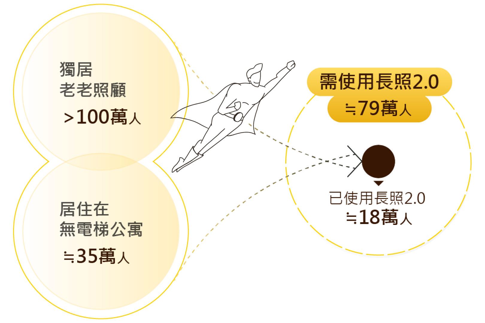
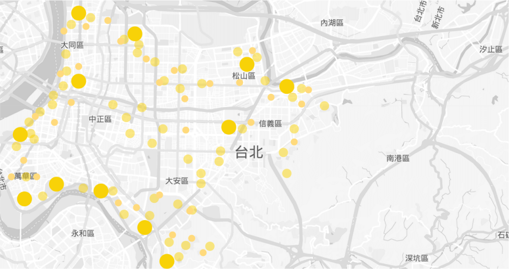

銀髮安居
銀髮安居、透過數據解密長者生活需求，
主動出擊，給予關懷與照護！
資料時點 2023.06.16｜＃老人照護 ＃住宅選擇
故事的開端
內政部與衛生福利部攜手合作推動「銀髮安居計畫」，透過大數據資料串連應用，找出真正需要幫助的老人並主動提供服務。

關鍵
數據
!!
長者獨居、老人照顧比率
9.88%
行動不便的長者比率
%
居住在無電梯公寓長者比率
4.24%
著手蒐集資料
內政部戶籍、建物與衛生福利部長照、中低收入戶等大數據資料，另輔以土壤液化、淹水潛勢區圖、交通站點、零售商店及醫療院所點位等開放資料，以機器學習方式產製「銀髮安居高度需求名冊」，可供內政部「包租代管」及衛生福利部「老人照顧」等政策業管單位運用，將有限資源作最有效配置，提升銀髮族照顧福祉。
集合各方數據
銀髮安居需求指數
位於土壤液化潛勢區
4.10%
活動斷層帶1公里內
4.64%
位於淹水潛勢區
4.64%
獨居老老照顧
9.88%
老人無子女有子女但未同住
7.21%
無外傭照顧之長照者
3.15%
2公里內無醫院或診所
4.25%
1公里內無便利超商
1.73%
1公里內無公車站牌
2.10%
高屋齡
1.56%
居住在無電梯公寓
4.24%
非鋼筋或鋼筋混凝土
7.40%
高齡者
5.98%
行動不便之身心障礙者
10.56%
行動不便之長照者
12.84%
低收或中低收入戶
8.36%
無自有住宅
3.93%
房價行情較低
1.40%

動手分析數據
整合戶籍、建物、長照、中低收入戶等超過1.5億筆跨機關資料，編算老人之行動能力、照護人力、經濟狀況、住宅狀況、環境便利及環境安全等6大生活面向、18項指標，並透過「層級分析程序法」（AHP) 配予各指標權數，並以機器學習方式，篩選出最需要協助的1%老人。
主動出擊
考量年長者為資訊獲取弱勢族群，依據「銀髮安居高需求名冊」主動探訪最有需要的人，並提供社會福利申請協助，例如社會住宅、長照2.0，讓有需求者真正受惠。
我們用數據改變了...
經由機器學習方式，透過長照專員，進行實地訪查，將近7成的長者確有長照需求，大幅提升長者照顧的探視率及社會福利使用率。
這次推出的「銀髮安居計畫」，是由政府主動找出有需要幫助的長者及其住所，亦可結合其他中央部會、地方政府的政策，協力幫助長者過更好的生活，達到智慧政府很用心，銀髮居住真安心之目標。
BEFORE
被動式接收
主動者受益
AFTER
主動出擊
精準分配
BEFORE
AFTER
未來應用
內政部與衛生福利部將持續廣納地方基層單位及民間團體之意見，使計畫更符合社會所需，並規劃依地方基層人員接觸實況回饋內容，讓銀髮安居指數更能準確地找出有服務需求的長者。
並以相同的經驗，套入婦女婚育、兒童福利、身障照護及無殼青年等重要議題。
透過複製主動出擊、精準分配的精神，運用於相關政策推動，例如精準寄送包租代管或相關住宅供給政策手冊給有出租潛力之物房屋及其所有權人，以推升住宅供給能量；亦可產製模擬資料，供社會大眾應用以設法提出解決或改善社會關切的議題。
回上一頁
看更多精彩案例
透過電信信令數據，掌握人口流動概況，揭示城市真實面貌！
地址編碼
透過電信信令數據，掌握人口流動概況，揭示城市真實面貌！
電信信令